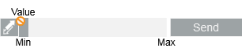

BACnet Fire 3rd Party Symbols
When integrating the BACnet Fire 3rd Party extension, the following symbols are available in graphics:
DYN_All_BACnetFire_Command_DisabelEnable_Central_001 |
| |
- Default command symbol for zones (LSZ) and detectors (LSP) graphic commands.
- It is a toggle button that displays Disable or Enable commands depending on the current point status.
|
DYN_All_Generic_Command_AnalogOutput_Central_001 |
|
- Default command symbol for Analog Output and Analog Value.
- Enter or increase/decrease the value and send it by pressing Enter.
|
DYN_All_Generic_Command_AnalogOutput_Central_002 |
|
- Secondary command symbol for Analog Output and Analog Value.
- Enter or increase/decrease the value and send it by clicking Send.
|
DYN_All_Generic_Command_AnalogOutput_Central_003 |
|
- Secondary command symbol for Analog Output and Analog Value.
- Use the slider to increase/decrease the value and send it.
|
DYN_All_Generic_Command_AnalogOutput_Central_004 |
 |
- Secondary command symbol for Analog Output and Analog Value.
- Use the slider to increase/decrease the value and send it by clicking Send.
|
DYN_All_Generic_Command_DigitalOutput_Central_001 |
|
- Default command symbol for Binary Output and Binary Value.
- Use the drop-down list to choose the value and send it by pressing Enter.
|
DYN_All_Generic_Command_DigitalOutput_Central_002 |
|
- Secondary symbol for Binary Output and Binary Value.
- Use the drop-down list to choose the value and send it by clicking Send.
|